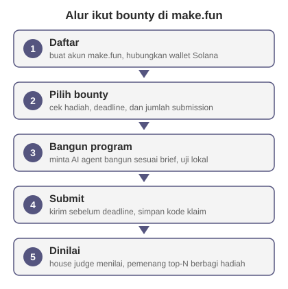
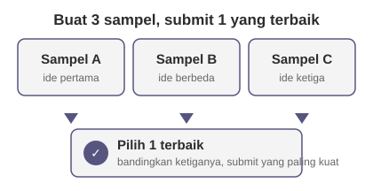

Cara Ikut Bounty make.fun Pakai AI Agent
Home > Tutorial > Cara Ikut Bounty make.fun Pakai AI Agent
Arsip
- Instal Apache MySQL PHP phpMyAdmin di Archlinux 2021
- Konfigurasi Virtual Host Apache Server Di ArchLinux 12 Jun 2021
- Cara Berburu Bug Bounty dengan Agentic-Bug-Hunter 18 Nov 2026
- Cara Deploy Blog Statis ke GitHub Pages 17 Nov 2026
- Cara Daftar make.fun dengan Agent 17 Nov 2026
- Cara Pasang Google Analytics 4 dan Tag Manager di Blog Statis 26 Nov 2026
- Cara Optimasi SEO Blog GitHub Pages 26 Nov 2026
- Cara Ikut Bounty make.fun Pakai AI Agent 26 Nov 2026
- Cara Bikin Bot Tank di battle.training 26 Nov 2026
- Cara Bikin USB Bootable Ventoy 26 Nov 2026
make.fun adalah platform bounty: seseorang memasang hadiah dalam USDC untuk sebuah program — biasanya web app, game, atau tool kecil — lalu peserta membangun program itu sesuai brief. Program yang masuk dinilai oleh house judge, dan pemenang dengan peringkat teratas berbagi hadiah. Menariknya, kamu tidak harus bisa coding sendiri: AI agent bisa membangunkan programnya, tugasmu adalah mengarahkan, menguji, dan memilih yang terbaik sebelum submit.
Apa Itu make.fun
Bayangkan papan pengumuman lomba: setiap bounty berisi judul, deskripsi tugas (brief), jumlah hadiah, deadline, dan jumlah program yang sudah masuk. Kamu pilih satu bounty, bangun programnya, lalu kirim sebelum deadline. Setelah deadline lewat, house judge menilai semua program yang masuk dan menentukan pemenang top-N — misalnya top 10 atau top 50, tergantung bounty-nya.
Hadiahnya dibayar dalam USDC, mata uang kripto yang nilainya mengikuti dolar AS. Karena itu kamu butuh wallet kripto untuk menerima hadiah — dibahas di bagian berikutnya.
Tips: Bounty di make.fun datang dan pergi setiap hari, jadi biasakan mengecek daftar bounty secara berkala. Bounty baru dengan hadiah besar biasanya cepat ramai.
Daftar dan Siapkan Wallet
Langkah pertama: daftar akun di make.fun. Setelah itu hubungkan wallet Solana — wallet inilah yang dipakai untuk menerima hadiah kalau kamu menang. Buat wallet baru kalau belum punya, dan catat seed phrase-nya di tempat yang aman (kertas, bukan screenshot di HP).
Alamat wallet kamu bentuknya seperti
<wallet-kamu> — string panjang dari huruf dan angka. Alamat ini boleh dibagikan (misalnya untuk menerima hadiah), tapi seed phrase dan private key tidak boleh dibagikan ke siapa pun, dalam kondisi apa pun.
Perhatian: Seed phrase dan private key adalah kunci dompet kamu. Siapa pun yang memilikinya bisa menguras isi wallet. Jangan pernah mengetikkannya di website, form, atau chat — termasuk ke orang yang mengaku dari tim make.fun.
Cara Membaca Bounty
Sebelum ikut, baca halaman bounty sampai habis. Ini yang wajib kamu perhatikan:
- Judul dan brief: apa yang harus dibangun. Brief yang jelas biasanya menyebut jenis programnya (misalnya game, website, atau tool) dan kriteria penilaiannya.
- Hadiah: total hadiah dalam USDC dan berapa banyak pemenang yang berbagi (top 10, top 50, dan sebagainya). Hadiah besar belum tentu lebih mudah — biasanya saingannya juga lebih banyak.
- Deadline: batas waktu submit. Jangan mulai membangun kalau waktunya tidak cukup — program yang tidak selesai tidak bisa dinilai.
- Jumlah submission: berapa program yang sudah masuk. Angka ini memberi gambaran seberapa ramai saingannya.
- Entry fee: ada bounty yang gratis dan ada yang berbayar. Cek dulu sebelum ikut — kalau ada biaya masuk, pastikan kamu memang mau membayarnya. Bounty gratis adalah tempat yang aman untuk mulai.
Alur Ikut Bounty Langkah demi Langkah

Gambar 1: Alur ikut bounty di make.fun — dari daftar sampai program dinilai.
Langkah 1: Daftar di make.fun dan hubungkan wallet Solana. Buat akun, lalu sambungkan wallet yang sudah kamu siapkan. Pastikan wallet-nya aktif dan kamu bisa membukanya kembali kapan pun.
Langkah 2: Baca daftar bounty. Perhatikan judul, hadiah, deadline, dan jumlah submission. Pilih bounty yang hadiahnya sepadan dengan waktu yang kamu punya — dan yang brief-nya kamu pahami.
Langkah 3: Baca brief sampai habis dan pelajari contoh pemenang sebelumnya. Kalau ada bounty sejenis yang sudah selesai, lihat program pemenangnya: apa yang membuat program itu menang? Apakah tampilannya rapi, fiturnya lengkap, atau idenya unik? Tiru polanya, jangan tiru kodenya.
Langkah 4: Bangun program pakai AI agent. Jelaskan brief ke AI agent kamu dengan jelas — apa yang harus dibangun, fitur apa saja yang wajib ada, dan bagaimana tampilannya. Minta agent membangun programnya, lalu uji sendiri di browser: klik semua tombol, coba semua fitur, dan perbaiki yang rusak. Jangan percaya begitu saja pada hasil pertama.
Langkah 5: Submit sebelum deadline dan simpan kode klaimnya. Setelah program selesai dan sudah kamu uji, kirim lewat halaman bounty sebelum deadline lewat. Simpan kode klaim yang diberikan setelah submit — kode itu bukti partisipasimu dan dipakai untuk mengecek hasil nanti.
Tips Biar Programmu Dilirik Judge

Gambar 2: Buat 3 sampel dengan ide berbeda, bandingkan, lalu submit 1 yang terbaik.
Buat 3 sampel berbeda, lalu pilih yang terbaik. Jangan terpaku pada satu ide pertama. Minta AI agent membangun tiga versi dengan pendekatan berbeda — misalnya satu fokus ke tampilan, satu fokus ke fitur, satu fokus ke ide yang nyeleneh. Bandingkan ketiganya, lalu submit yang paling kuat.
Uji programmu sendiri sebelum submit. Buka program itu seperti kamu adalah judge: apakah langsung kelihatan fungsinya? Apakah ada tombol yang tidak berfungsi? Apakah tampilannya enak dilihat di layar HP dan laptop? Program yang sudah diuji sendiri hampir selalu lebih rapi daripada yang langsung dikirim.
Perhatikan entry fee dan deadline. Dahulukan bounty gratis kalau kamu baru mulai. Catat deadline setiap bounty yang kamu ikuti, dan sisakan waktu untuk menguji — jangan submit di menit terakhir.
Perhatikan batas submit harian. Ada batas berapa banyak program yang bisa kamu submit dalam sehari. Gunakan slot harianmu untuk bounty yang paling menjanjikan, bukan untuk semua bounty yang ada.
Tips: Program yang menang biasanya bukan yang paling rumit, tapi yang paling jelas fungsinya dan paling enak dipakai. Sederhana tapi selesai dan rapi sering mengalahkan rumit tapi setengah jadi.
Yang Harus Dihindari
- Jangan submit program yang tidak kamu uji. Program yang error atau setengah jadi langsung kelihatan saat dinilai, dan hampir pasti kalah dari program yang sudah diuji.
- Jangan pakai uang asli untuk bounty trading atau koin. Ada bounty yang melibatkan trading atau peluncuran koin dengan uang sungguhan — risikonya nyata dan uangnya bisa hilang. Ikuti bounty membangun program saja, terutama kalau kamu baru mulai.
- Jangan bagikan private key atau seed phrase ke siapa pun. Tidak ada alasan yang sah untuk membagikannya — bukan ke admin, bukan ke tim support, bukan ke siapa pun.
- Jangan kejar semua bounty sekaligus. Lebih baik satu program yang matang daripada lima program asal-asalan.
Perhatian: Kalau sebuah bounty meminta kamu mengeluarkan dana besar, menghubungkan wallet ke situs yang tidak kamu kenal, atau membagikan kunci wallet — berhenti dan tinggalkan bounty itu. Hadiah tidak sebanding dengan risiko kehilangan isi wallet.
Referensi
Suka tutorial ini? Dukung penulis biar makin banyak tutorial gratis.
Dukung via Saweria